This is a comprehensive list of the keyboard shortcuts in Tuatara Turing Machine Simulator.
| Command | Shortcut |
|---|---|
| 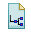 New Machine | Ctrl + N |
| 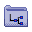 Open Machine | Ctrl + O |
| 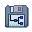 Save Machine | Ctrl + S |
| 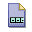 New Tape | Ctrl + Shift + N |
| 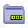 Open Tape | Ctrl + Shift + O |
| 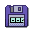 Save Tape | Ctrl + Shift + S |
| Undo | Ctrl + Z |
| Redo | Ctrl + Y |
| Cut | Ctrl + X |
| 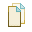 Copy | Ctrl + C |
| 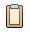 Paste | Ctrl + V |
| Delete Selected Items | Delete |
| Command | Shortcut |
|---|---|
| Add States | F2 |
| 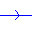 Add Transitions | F3 |
| Make Selection | F4 |
| Eraser | F5 |
| 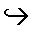 Choose Start State | F6 |
| Choose Accepting State | F7 |
| Choose Current State | F8 |
| Command | Shortcut |
|---|---|
| Lambda Symbol | Shift + L |
| Epsilon Symbol | Ctrl + E |
| Move Read/Write Head Left Action | Left Arrow |
| Move Read/Write Head Right Action | Right Arrow |
| Otherwise Symbol | ? |
| Blank Symbol | Spacebar or '_' |
| Command | Shortcut |
|---|---|
| Validate Machine | Ctrl + D |
| Step Machine | Ctrl + T |
| Execute Machine | Ctrl + E |
| Pause Machine | Ctrl + P |
| Stop Machine | Ctrl + R |
| Set Execution Speed - Slow | Ctrl + 1 |
| Set Execution Speed - Medium | Ctrl + 2 |
| Set Execution Speed - Fast | Ctrl + 3 |
| Set Execution Speed - Super Fast | Ctrl + 4 |
| Set Execution Speed - Ultra Fast | Ctrl + 5 |
| Command | Shortcut |
|---|---|
| Move Read/Write Head Left One Cell | Left Arrow |
| Move Read/Write Head Right One Cell | Right Arrow |
| Move Read/Write Head to Start of Tape | Ctrl + M |
| Erase Cell and Move Read/Write Head Left One Cell | Backspace |
| 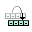 Reload Tape | Ctrl + L |
| |
Ctrl + B |
| Command | Shortcut |
|---|---|
| Configure Alphabet | Ctrl + A |
| Command | Shortcut |
|---|---|
| Open Help Contents | F1 |